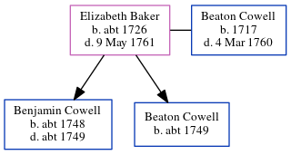

Elizabeth Cowell (née Baker) c1726 - 1761
[ Home ] | [ Calendar ] | [ Surnames Index ] | [ Errors ] | [ Family History ]Elizabeth Baker, the wife of Beaton Cowell (the six times great-uncle of Nigel Horne), was born in Margate, Kent, England c. 1726 and married Beaton (with whom she had 2 children: Benjamin and Beaton) at Christ Church Cathedral, Canterbury, Kent, England on 4 Feb 17471.
She died on 9 May 1761 in Thanet, Kent, England.
Children
- Benjamin was born c. 1748
- Beaton was born c. 1749
Citations
- Kent, Canterbury Archdeaconry Marriages - Findmypast
Media
Canterbury Marriages - GBPRS/CANT/M/97153612/1
England Marriages 1538-1973 - R_22085684469
Boyd's 1st Misc - GBPRS/M/710175891/1
Kent, East Kent marriage index 1538-1754 Transcription - GBPRS-EASTKENT-MAR-165042-1
Canterbury Marriages - GBPRS/CANT/M/97153612/2
England Marriages 1538-1973 - R_22085684469/2
Britain, marriage licences - GBPRS/COA/MARRLICENCE/00150918/2
Family Tree
Map
Generated by ged2site. Last updated on Jul 3, 2024
Known Issues
Birth date (abt 1726) has no citations
Death date (9 May 1761) has no citations